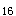

A.只要有就可以引起癌症
B.存在于正常细胞中
C.只对细胞有害，而无正常功能
D.不为细胞因子编码
E.总是处于活化状态
参考答案：B
题目解析：肿瘤细胞中存在着显性作用的癌基因，在正常细胞中有与之同源的正常基因，被称为原癌基因，B正确。只有当原癌基因的结构或调控区发生变异，基因产物增多或活性增强时，细胞过度增殖，才形成肿瘤，故A不正确。原癌基因与细胞增殖有关，是维持机体正常生命活动所必需的，在进化上高度保守，C不正确。原癌基因对细胞因子有编码作用，D不正确。原癌基因未发生变异时，处于失活状态，E不正确。
A.生长因子
B.生长因子受体
C.转录因子
D.CTP结合蛋白
E.ATP结合蛋白
参考答案：A
题目解析：原癌基因sis的表达产物是生长因子。原癌基因发生突变后可能生成生长因子的变异体，从而导致细胞生长、增殖失控，引起病变。
A.广泛存在于生物界
B.基因序列高度保守
C.其作用通过表达产物来实现
D.基因处于静止或低表达状态
E.所有原癌基因都有致癌性
参考答案：E
题目解析：不是所有的原癌基因都有致癌性。原癌基因是指存在于生物正常细胞基因中的癌基因。正常情况下，这些基因处于静止或低表达状态，不仅对细胞无害，而且对维持细胞的正常功能具有重要作用。只有当其受到致癌因素作用被活化并发生异常时，才导致细胞癌变。
A.P
B.Rb
C.APC
D.APK
E.erb
题目解析：erb为细胞癌基因，不属于抑癌基因。抑癌基因是一类抑制细胞过度生长、增殖，从而遏制肿瘤形成的基因。常见的抑癌基因包括P，、Rb、P 、APC、DCC、VHL等。
B.VHL
D.DCC
E.Rb
题目解析：上述均为抑癌基因，其中Rb是最早发现的抑癌基因。
A.APC
C.P
E.APK
参考答案：C
题目解析：由于野生型P蛋白在维持细胞正常生长、抑制恶性增殖中起重要作用，因此被称为\'基因卫士\'。
微信关注